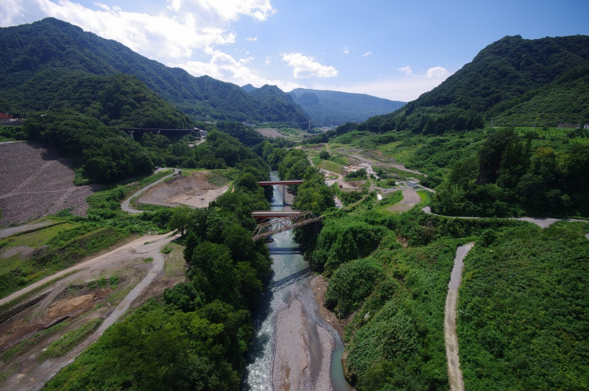
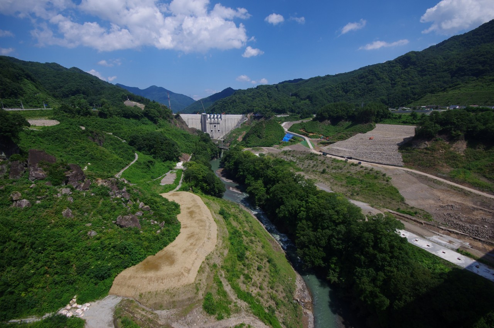
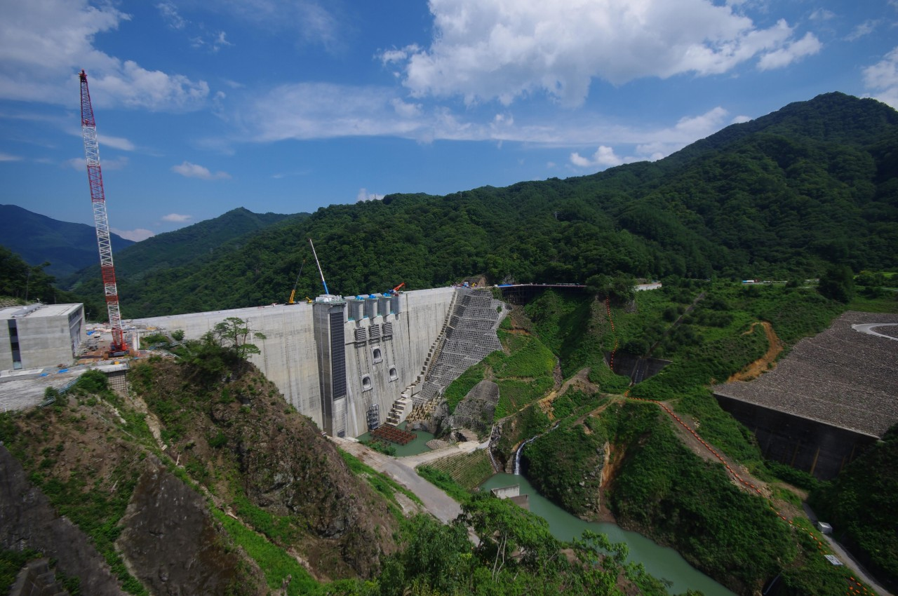

八ッ場ダム建設と消えた街
2019年8月訪問。
八ッ場ダムは2020年に完成予定のダムである。1967年に建設が決定、反対運動や事業中止などの紆余曲折を経て半世紀もの年月が過ぎた今、完成を目前に控えている。 まもなく試験湛水が開始され、川原湯温泉などがあった土地がダム湖に沈む予定だ。かつての街は南北の高台への移転が行われ、湖の底へと姿を変えようとしている。

吾妻線 川原湯温泉駅で下車。

新川原湯温泉。古臭い温泉街のような雰囲気は感じられず、開放感のある街並みだ。

この道路から下を見下ろしてみる。

吾妻川に掛かる橋。吾妻線の旧線はこの鉄橋を通っていた。


緑に囲まれた廃橋。

吾妻川の真上へ。


反対側へ渡ってみる。右下に旧川原湯温泉駅があったが、街は跡形もなく更地にされてしまった。

もう一つ吾妻線の鉄橋がある。

八ッ場大橋を渡り終え左に曲がると、下へ繋がる道路があったので散策してみる。工事等で使われている形跡もなく廃道同然。

対岸に見えるのが川原湯温泉である。

小さな川を超えたあたりで草が酷くなってきたので撤退しよう。

続いてダム本体が近くで見られるやんば見放台へ移動。

6月の時点の様子と比較するとかなり完成に近づいていることがわかる。

更地になったかつての街では工事用車両が行き交っていた。